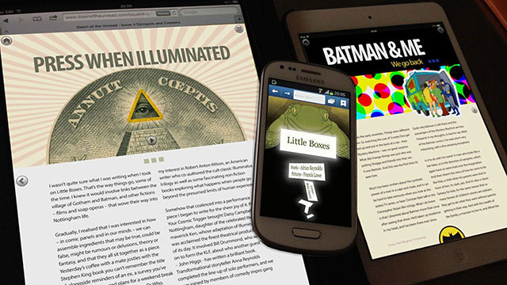
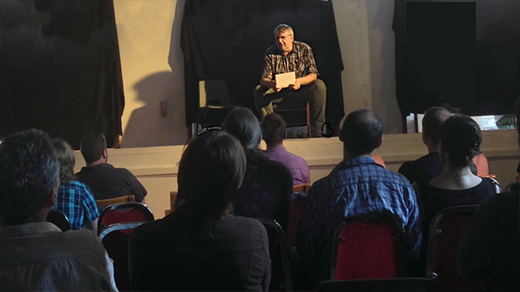
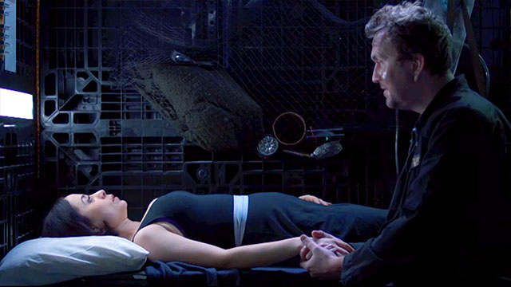

People
Adrian Reynolds - Screenwriter and Script Editor

Adrian thrives on creative possibilities. We first partnered on Dawn of the Unread (2014), where he was responsible for co-ordinating the comic writers and artists. Adrian also wrote the story and embedded content for 'Little Boxes' which was illustrated by Francis Lowe and set a high bar for the project.
During Covid-19, Adrian wrote essays for Thinkamigo which tapped into pandemic paranoia. These dense, multilayered mysteries represented a taste of things to come. Between pandemic Government work, I was developing a wartime story set in Sherwood Forest. However, this was superceded by something that had been gathering dust in a garden shed for over a decade - a comedic screenplay pitch originally written with art school friend, TV puppeteer Marcus Clarke.



After several brainstorming sessions with Adrian, these fragments became the basis something darker, more intense. Houdini Window is a cold war thriller and my first attempt at long form fiction. We've been employing production methods normally associated with software development and service design, including Generative AI for storyboards and AI Language Models for mapping a timeline that spans seventy years. This time of course, I'm the writer instead of 'the digital guy' with Adrian providing script editing support.
Paul Fillingham